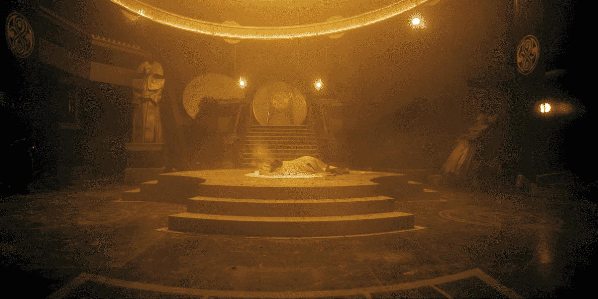
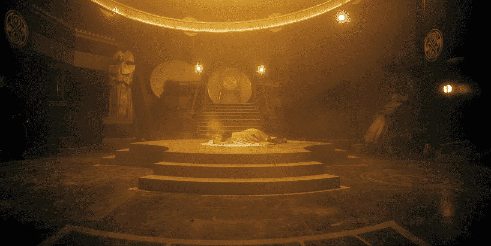
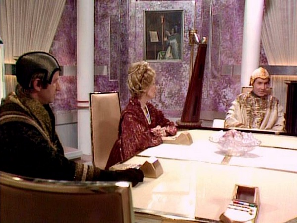
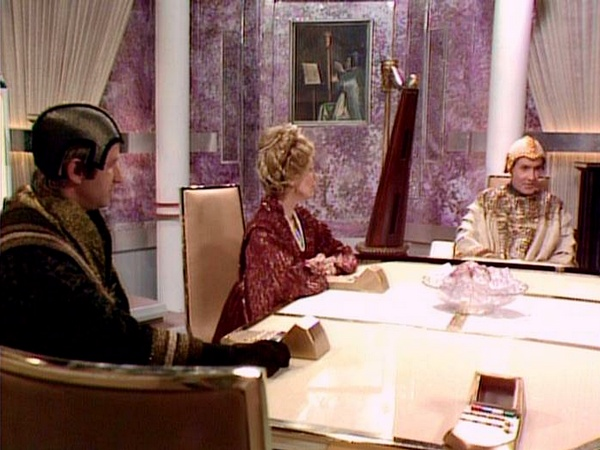

THE GREAT HOUSES OF GALLIFREY
The Heart of the Spiral Politic
TABLE OF CONTENTS
Click on paragraphs to see color coding for sources
THE CAPITOL OF GALLIFREY
The Capitol is considered to be Gallifrey's First City. Several Time Lords use the word Gallifrey to indicate the Capitol (and not the planet in general). Its official name is Capitol City, but some very unreliable sources call it Sage City. Most Gallifreyans simply refer to it as "the Capitol."
The Capitol is in the Northern Hemisphere in the wastelands at the heart of the continent of Wild Endeavor. It sits in the valley between snow the capped mountains of Solace and Solitude. These are part of a desert mountain range that stretches to the horizon. The massive Mount Cadon dwarfs the Capitol. The only thing that grows on these mountains a deep red grass. During the time of the Pythia there was a volcanic chasm running through the Capitol known as the Crevasse of Memories That Will Be. In modern times, the Crevasse is located outside the Capitol. This might have been where the Untempered Schism had been for billions of years. Rassilon redesigned the rest of the Capitol after coming to power. In the modern era the Schism is located outside the Capitol. The Capitol used to have a harbor (but the oceans receded). The Kasterborous Borealis can be seen from the Capitol, as can Mount Cadon. The Capitol might suffer from a bitter wind from the Northern Lakes and was covered in snow for much of the year.
By Human standards the Capitol doesn't appear to be that large of a city, but the dimensionally transcendental nature of a few of its buildings makes it the biggest and most heavily populated city on the planet. Over half the planet's population (at least several thousand, probably several million) live in the Capitol and many Time Lords never leave the Capitol. A large glass dome covers the Capitol. The shaft the Capitol sits in the middle of is bordered by a circular white wall. Only a few of the buildings in the Capitol are dimensionally transcendental. It would take modern Time Lords thousands of years to rebuild the entire Capitol, and re-create the transduction barriers.The entire Capitol is filled with a sense of silent timelessness. Gallifrey (the Capitol?) smells of cloisters, libraries, vellum, and old excitonic circuitry. Candles are very common. The strong and ridged gravinium is the most common building material on Gallifrey. The floor plates have titanium rivets. Most of the walls in the Citadel appear to be made of stone with dim green light leaking out from the cracks in the aging walls. Unused corridors are filled with dust. The architecture is filled with fountains and alcoves. There are also many gardens with their own domes. The decor of the Capitol can be changed in the same way that a TARDIS’s desk-top theme can be changed. They often to use the valuable brass-like Machenite as the building material of choice for the interior of important rooms. The streets of the Capitol are patrolled by automated street cleaning mechanisms.
Council members use transtubes and air-cars to get around the Capitol, but there are at least 49 metal doored External Gates that alow one to exit the Capitol at ground level (most of which haven't been opened in a century). A small conventional spaceport can be found just outside the Capitol dome (probably the Desiree Spaceport). Time Scaphs can be found docked the Scaph Port.
The capitol is broken up into 6 numbered sectors and all the rooms are numbered (example Room 30007 in the Administrative Complex - probably Sector 3). Sectors 1-6 designate the Great Citadel and the High City towers attached to and protruding from the conical base of that structure. Sectors 7 and 8 designated the rest of the Capitol, the New Towns outside the Citadel proper. Each of these Sectors is described below.
THE GREAT CITADEL OF THE TIME LORDS AND THE HIGHER CITY
The center of the Citadel is a turquoise colored hour-glass shaped tower that is designated Sector 1, while Sectors 2-6 designate the towers attached to and protruding from the conical base of the structure. These parts of the Capitol is known as the Higher City (to differentiate it from Mid-Town and Low Town). Sectors 7 and 8 designated the rest of the Capitol, outside the Citadel. Each of these sectors is filled with numerous cathedral like rooms of metal and glass. The Citadel is probably dimensionally transcendental and it would probably take about 73 days for one person to visit every part of the Citadel.

 

After the Vardan/Sontaran invasion, the security around the Presidential palace was upgraded to be the most sophisticated bio-monitoring systems in the cosmos. Even when not locked down, it takes someone with at least the rank of Captain of the Chancellery Guard's biodata and security pass to open the doors to the Retreat. Once locked down it requires lock burners or heavy weapondry to breach. A temporally reactive update can send a signal back in time to update security systems undoing a breach that has already begun. It needs presidential authority to enact. There are secret passages that use dimensional junctures to allow the President to move in secret to locations throughout the Capitol. Each President has added more and more passages connecting all parts of the Capitol (including the Omega Arsenal) to their Office.
Nested into one of the alcoves in the Presidential Palace is the Inner Council Room which was intended to be a private area for the President to meet with the rest of the Inner Council in secret. This room has a Matrix Portal mounted above the debating table and a secret door that leads to the controls for the Time Scoop. This room is only used about once every thousand years and serves as a storage for lesser know artifacts of Rassilon. Normally the Inner Council meets in the Great Hall of Time where one of the Matrix Portals is mounted.

High City Sector 6: Sector 6 is the second largest sector in the Capitol. As its number implies, it is directly adjacent to archives of Sector 5. Its Residential Wing holds the offices and dormitories for all 1000 of the Time Lords of Gallifrey. Though the Citadel towers over the other buildings in Capitol City, the exterior isn't large enough to allow 1000 Time Lords to live in comfort. Fortunately it's interior is dimensionally transcendental and has at least 119 levels. The Cardinal’s Habitation Complex holds the living quarters for the Cardinals.This might be where Tower Gamma 6 is located.
Sector 6 technically extends out to cover the entire Prydonian Time Academy. Geographically speaking, the Prydonian Academy is a self-contained city located along the northern boarder of Southern Gallifrey at the base of the southern slopes of Mount Cadon (Gallifrey's highest mountain). Because this is Gallifrey's only Time Academy (the institution which bestows the title of Time Lord) it is annexed to the Citadel using dimensional junctures. The academy city like structure covers 28 square miles. The facility lacks a dome and is open to the air. Most of the buildings are ebony colored and fortress-like, with glass towers and turrets along the top. Covered sky-bridges interconnect them. Perfectly groomed lawns with little blue flowers surround the buildings with sand filled pathways leading between them. The majority of the buildings are dormitories, lecture halls, gymnasiums, and eateries. The academy has it's own TARDIS cradles and scaphe bays. The Black Collection is stored at this Academy and monks taking the Mystic Studies course learn dark secrets in the upper levels of its towers. Most (if not all) of the Junior Cardinals and Time Lord Councilors teach at the Academy.
MidTown Sector 7: Beneath the upper levels of the Citadel is Sector 7, which is known as MidTown. It extends all the way to the mountain side (either the mountain of Solace or the mountian of Solitude) There are a total of 363 white towers arrayed in a circular pattern around the Presidential Wheel. Many of the surrounding towers are helical in design. There is a statue of Omega located just outside the Citadel which dates back to the Time of Legend (making it one of the most ancient features of the Capitol). The original Time Capsule Growth Foundry was located near this statue.
The 53 story Communications Tower is just outside the Citadel in Sector 7. The tower holds Traffic Control, which is one of the highest security-rated rooms in the Citadel. Every ship passing through the Kasterborus Sector is carefully monitored. Because of that location Power Mast on level 31 of Sector 1, Level 31 of sector 7 of the Citadel also houses the controls for the Transduction Barriers and the Quantum Force-Fields.
There are two huge towers in the north of the Capitol named Canonicity and Likelihood. Both of these building are among the few that are dimensionally transcendental. The Doctor's Trial in War Games was held in the tower of Canonicity. The tower of Likelihood might be home to the Bureau of Possible Events. Sector 7 might hold Tower Alpha 7.
MidTown has a Multi-Dimensional Art Gallery beneath the Capitol. It is filled with vast numbers of computer created paintings from throughout Gallifrey's history, but N-Forms are no longer displayed.
Scientific research is done in the Penansulix Scientific Structure (adjacent to Sector 4's Jasidary Building). Gallifreyan laboratories include everything from cross-dimensional wave scanners to test tubes and Bunsen burners. The Parachronistic Chamber (located deep in the Capitol) can regulate time distortions. Time Lords meet in the Artron Forum to telepathically discuss and exchange points of view. While meeting their excess artron energy is absorbed and routed to the berthing bays to supply TARDISes. Other buildings include the Mortal Coil hospital complex of the Hospitaller-surgeons, Retro-Engineered Spare-Body-Parts Repository, the Meditative Sanctums of Astral Harmony, the Temandra Pleasure Gardens, Gesyevva's Fingers (colonnades), Bureau of Political Advancement, the Temple of Capitol Guilds, the Office of Public Registry, and numerous massive workshops. There is also Pandak's Square where Presidential inaugurations are sometimes held. Gardens are contained in their own glass domes.
4th Circle: Tactical envisioning and clairaudient intelligence.
5th Circle: Perceptual warfare.
6th Circle: Extra-sensory camouflage.
7th Circle: Primary evolutionary and terrorogical research.
8th Circle: Deep Level Conference and Bunker facilities. The Nostrom Cloisters in the lower levels serve as a presidential bolt-hole.
Lowest Circle: The War Room where the Time War Council of the Great Houses meets
The cylindrical base of the Capitol also holds the Repair Shops. There are at least 19 Dry Dimension Dockyards on under level-14 and the Time Travel Embarkation Port located on below on under level-15. Despite this, its difficult to find TARDIS parking in the capitol. These landing bays can generate a dampening field that will prevent dematerialization. Quadriggers (aka Quantum Engineer) work in the maintenance levels of the Capitol and wear dark colored coveralls. With the event of the Type 54 they were replaced by the less prestigious Quantum Mechanics. During the War Era the levels beneath Sector 8 became a TARDIS Graveyards. (because the Time Lords no longer trusted the TT Capsules to safely make their way to the impacted dimension that held the traditional graveyard.)
The Time Lords constructed many weapons designed to destroy Gallifreyan technology. Most weapons don’t need to be fired at a specific target, instead they affect everything within a certain area. Most of Gallifrey's Validium is stored here. Validium is the Ultimate Defense for Gallifrey and is one of the most dangerous of the weapons in the Slaughter House. The Regen-Gun is stored in these archives. It forces its victim to burn through all their remaining regenerations a couple seconds. A temporal grace system is capable of disabling the gun. Inside the Slaughter House is the Omega Arsenal where all the weapons that are forbidden by the Laws of Time are locked away. One of these weapons is the Profane Virus of Rassilon. This Virus was created by Gallifrey's greatest nano-engineer, Erkulon, as a final resort to prevent aliens from obtaining Gallifreyan technology by destroying all of it. It can override and reprogram any excitonic circuitry. The Omega Arsenal also holds the Regeneration Codex with in the Urn of Rassilon. The Codex alows remote control of Gallifreyan Stellar Manipulators. But the most feared weapon in the Arsenal was the Moment. The Moment can time lock entire sectors, create time fissures into and out of time locks and different parallel universes, and break several other of the Laws of Time. Through the Great Key, the Moment became so powerful that the operating system became sentient and it developed a conscience and an intelligence. It can even influence their protector's subconscious actions, coordinating the events of their whole life to achieve its desired ends. For more information on the Great Key and the Moment see The Eye of Harmony
THE HEAD OF THE PRESIDENCY
Lord President of Gallifrey, the Inheritance of Rassilon, President of the Supreme Council,
The Presidential Charter (likely part of the Constitution) lists the powers of the Lord President. Technically he has near absolute power, including the right to order executions, however, the Constitution states that the President cannot give orders directly to the Chancellor. However all of the President instructions must go through the Inner Council before being acted upon, and in an emergency session, the Inner Council can override the President at any time with a unanimous vote. As Protector of Gallifrey, the President has direct control over all aspects of Gallifrey's defenses and has access to all of Gallifrey’s defense codes. However the CIA can override him in matters of off world security. In extreme circumstances, President even has the authority to send temporally reactive update signals back in time to update security systems undoing a breach that has already begun. The President is entrusted with many of Gallifrey’s most closely guarded secrets, including Jasquig Records, the War Perceptives, the Cavox Imperatives, and the Oubliette of a. The Black Files hold the most sensitive of the Time Lord’s secrets. While officially they un-exist they are infact, held in an office in the heart of an asteroid in a pocked dimension which is a remnant of a redundant timeline. The President is the only Time Lord that knows that the Time Lords' duty is to enforce the balance of the Guardians and that they are directly answerable to the Guardians. It is also likely that the President knows that Omega survived the detonation of the star Quaba. Up until Arc of Infinity the Presidential Code was 4544553916592.
The Presidency consists of three Time Lords, the Lord President (or Head) and two attaches who function as secretaries, and advisors. The attaches are not allowed to serve on the High Council. For some of Gallifrey's history it was traditional for each President to have a Presidential CAT (Calculating Animal with a Tail). This tradition was discontinued when the Doctor was at the Time Academy.
Approximately every thousand years the Time Lords would deliberately loom a collection of potential leaders, one of whom would become the next Lord President of Gallifrey. Each President has the right to name his successor. This is usually done at a Resignation Day Ceremony when reading the Resignation Honors List. 50 Members of the Chancellery Guard will be present for a Presidential resignation.
These successors must be certified and approved by High Council election ballot, but this is generally a formality. Its almost unheard for anyone other then the named successor to win. The tradition for this started with President Pundat who had the Constitution amended. President Romana would have this amendment abolished and expand presidential voting rights to the entire populace of Gallifrey. While the choosen successor generally stands unopposed, Article 17 of the Gallifreyan Constitution, allows almost any Time Lord to declare themselve as a candidate during an election. The only exception being a former president who was impeached. However most Time Lords serve on the High Council before becoming Lord President. All voting for a presidential election occurs in the Capitol (this might mean that only the Time Lords get to vote for the President).
During the time between a Presidential Resignation and the formal ordination of the President-Elect, the Chancellor carries the title of Over-Chancellor and the High Council is know as the Supreme Council (as it has supreme power for that period). It should be noted that without a sitting President the Supreme Council technically can not ratify anything. However this law has been known to be deliberately overlooked.
If the President knows they are going to absent for a time, they can nominate another Time Lord (usually a former retired president of the Chancellor), to serve as a Deputy or Acting President. The Cardinals cannot over-rule this nomination. The In Absentia in Chaotica Protocol (which was created during the reign of Pandak II) state that if an catastrophic emergency occurs when the Lord President is off-world then the current (or former) High Council member located in the most advantageous position to deal with the crisis becomes the Acting-President for the duration of the crisis (or until the President returns). If time permits, the Gallifreyan Constitution allows the High Council to appoint a Time Lord to serve as Acting President. This appointment must be ratified by the Chancellor. If the Lord President still lives but is absent then the Council have the power to formally remove him from office, alowing an election to occur.
Should a president resign or die without naming a successor, an election must be held within 48 hours. Despite the urgency to decide upon a President-Elect, it normally takes years to plan and assemble a Presidential Ordination. President-elects do not obtain full access to the powers of the Head of the Presidency, most notably full access to the Matrix, until this ceremony is complete. The Ordination traditionally takes place in the Panopticon, but some have chose Pandak's Square for their ceremony. Presidential Ordinations and other formal ceremonies such as the appointment of a Chancellor are lead by Gold Usher (also known as the Dromeain Archibaptirx). At all such appointments Gold Usher will rap his staff down three times. Once for wisdom, once for honor, and once for tradition. Computers paint pictures of every Presidential Ordination. It is tradition for a new President to forgive political prisoners as his first act in office.
The current President can not be but on trial, but Presidents can be impeached by a vote of no-confidence from the High Council. A President can be called to give evidence in judicial investigation. After a certain amount of time (at least 900 years) President's face mandatory retirement. If you have served as President before, you must regenerate before serving again. Ex-Presidents appear to retain the right to access the Matrix's predictive abilities and call for Presidential Inquires. As of President Flavia there have been 412 Presidents of Gallifrey.
ORDINAL-GENERAL
Auld Mortality
LORD BURNER
POLICY ADJUSTMENT BUREAU
THE LORD HIGH CHANCELLOR OF ALL GALLIFREY
The Chancellor is appointed by the High Council and ratified by the President. Ever since the Morbius Crisis it has been mandatory that the High Chancellor is always a member of the same Chapter as the President. After a Presidential Resignation, but before the new President-Elect is sworn in, the Chandellor carries the title of Over-Chancellor.
In the decades right before the Time War the position of Chancellor would be broken up into Vice-President, Chancellor of Time Past, Chancellor of Time Present, Chancellor of Parallel, and Chancellor of Time Future. Since Chancellors are also the official Ambassadors of Gallifrey each of these new Chancellor's is probably tasked with representing the Great Houses to the temporal powers of the past, future, and parallel realities. Rassilon would replace the position with the office of Prime Minister for early years of the Time War before restoring it.
 

THE INNER COUNCIL
Normally the Inner Council meets in the Great Hall of Time where one of the Matrix Portals is mounted in it. But nested into one of the alcoves in the Presidential Palace is a the Inner Council Room which was intended to be a private area for the President to meet with the rest of the Inner Council in secret. Like the Great Hall of Time, this room has a Matrix Portal mounted above the debating table. This room is only used about once every thousand years and serves as a storage for lesser know artifacts of Rassilon.
THE HIGH COUNCIL OF THE TIME LORDS OF GALLIFREY
The Twenty-Four, The Supreme Council
Below the High Cardinals of the Inner Council are the six Prime Cardinals (one for each chapter), and 11 Lord Cardinals. Later the positions of Keeper (aka Coordinator) of the Matrix, and Castellan (commands the Chancellery Guard and the Watch) were made non-voting members of the Council. Since Castellans aren't always Time Lords this is the only way a non-Time Lord can serve on the Council. High Council members are forbidden from serving in the Parliament or on the Supreme Court during their term as counsellors. Chapter Cardinals do not serve on the High Council. Aliens are never allowed to serve on the High Council.
The councilors usually meet in the High Council Chamber of Congress. The High Council sets policy and is responsible for most of the daily decisions that affecte the world. These Cardinals supervise various commitees and organizations and the co-ordinators of those groups report to the council. This includes Surgeon General, Gold Usher, the Keeper of the Matrix, and the Inquisitors. A sub-committee of the High Council oversees the Temporal Scanning Service at Temporal Scanning HQ. The Honorable Central Population Directory (which handles matters concerning the Looms) is another sub-committee that is under High Council control. The Celestial Intervention Agency that - in theory - is under the High Council's supervision, but, in practice, the CIA's reports directly to the Chancellor. It is rumored that 2/3rds of the High Council has been bribed or blackmailed by the CIA.
In the times between the resignation of the former Lord President and the swearing in of the new one the High Council is know as the Supreme Council, as it has supreme power for that period. It should be noted that without a sitting President the Supreme Council technically can not ratify anything. However this law has been known to be deliberately overlooked.
Every member of the High Council carries a Badge of Office. A TARDIS with High Council Protocol privileges can break through the lower level transduction barriers. However most High Councilors are too busy with affairs of state to ever leave Gallifrey in their TARDISes. Data cores of High Council rulings have their casings color coded by the Chapter whose President is currently in power.
THE PARLIAMENT
The Ruling Houses, the College of Cardinals
The Surgeon-General is a member of the Parliament, as are the Chapter Cardinals (who lead the Chapters), Under Cardinals, Junior Cardinals, the High Gold Usher, Inquisitors and other Senators. Also included are the Inquisitors who make up the Supreme Court of the Guardians of Gallifreyan Law. Most of the time the current President's Chapter will be the most well represented Chapter on the Council. Other members of the Supreme Council include the Surgeon General,
The Parliament is only convened when issues of great import are to be discussed and decided (such as the passing of laws and amendments to the Constitution). Most of the time the High Council handles matters. The High Gold Usher decides who can speak at meetings of Parliament. The Parliament appoints 19 of the members of the High Council from its own ranks. The most experianced of the Parliament are generaly chosen to become Prime (or High) Cardinals on the council, but they must step down from Parliament to take up that new position. The combined mental powers of these Time Lords allow them to take mental control of any Time Lord (even ex-presidents).
The Citadel's Cardinal’s Habitation Complex holds the living quarters for the Cardinals. Most Junior Cardinals teach at the Academy as well as pursue advanced research projects. All of them are still considered to be scientists and they continue to spend millennia working on their individual research projects.
THE CHAPTERS OF THE TIME LORDS
Each Chapter has their own Academy. Most of the members of each chapter embody certain traits. A Gallifreyan's initial chapter is chosen based on their personality and talents at age 8. Upon graduation from an Academy a Gallifrey is given the opportunity to change their Chapter. But afterwards Gallifreyan customs forbid a person changing allegiances to another Chapter. Each Chapter has 100 full Time Lords for a total of 600. Their are also about 400 Apprentice and Junior Grade Time Lords at any given time. Each Chapter has a Chapterhouse. The chapters that are not represented by the current Head of the Presidency are considered to be independent, and their Lords are often know as Independents. Time Lords can give their words as either a Time Lord or as a Prydonian. Such oaths are taken very seriously. It is traditional for Gallifreyans who change their chapter at graduation, to continue to wear the original colors of their academy.
It should be noted that plebeians (non-Time Lord) are not bound by the color coding of the chapters with respect to dress. Gallifreyans who become Investigators for the CIA lose all rank and connection to their colleges. Black and white robes appear to indicate Gallifreyans who are not currently aliened with a particular Chapter. Black appears to indicate an alligence to no chapter while white might indicate alligence to all chapters. Jesters on Gallifrey wear multicolored clothes (perhapse this indicates confusion?)
The Six Cardinal Colleges
- Prydon Chapter: The Prydonians wear scarlet, orange, and gold. Most have long sallow faces with beaked noses. They are known to be plotters, decision makers, and liars. They also tend to be talented with learning other languages. This Chapter holds the most politically powerful Houses and for this reason receives more advanced Rassilon Imprimaturs than the lower chapters. The Prydon Chapter has produced more Presidents then all the other Chapters combined. They have also produced more renegades then the other chapters. This Chapter was founded by Rassilon.
- Arcal Chapter: Arcalians wear green and brown robes. This is the second most powerful chapter and for this reason receives more advanced Rassilon Imprimaturs then the lower chapters. This faction was dedicated to science and technical expertise, and holds many of Gallifrey foremost scientists and temporal engineers. There is an Arcalian Council for Temporal Research. While they love to study it, most Arcalians dislike actually interacting with the outside universe, and rarely leave their TARDISes when off world. Even on Gallifrey they tend to be quite solitary. Arcalians are known for always siding with the winning side of any political debate. This Chapter was probably founded by Omega.
- Patrex Chapter: The Patrexes wear heliotrope burgundy robes. The Patrexes are an order of artists, aesthetes, librarians, and philosophers who see artistic value in everything (even pain and suffering). Many of them have advanced telepathic abilities. They are know for the far away looks they carry on their faces, but most lack any true imagination. Adventure does not come easily to members of the Patrexes Chapter. This chapter struggled to maintain its quota of 100 full Time Lords and is a minor player in Time Lord politics. The Patrexian Numbers serve as a numerical base to everything they create. They are know for obsessively cataloging everything. The few Patrexes who do rise to the first rank (such as the rich and powerful Tebediatroculozan) are well respected for their mental prowess. One of the duties of the Patrexes might scanning into the future as far as was possible. Space-Traffic Control is considered to be a good job for Patrexes who long to learn about life outside of Gallifrey. Practically everything they create is beautiful but pointless. This Chapter was founded by Lord Patrex.
- Cerulean Chapter: Their colors are a subdued light blue and they have little political power. Probably Green in policy. This chapter is made of either academicians or bureaucrats.
- Drome Chapter: The Dromeian colors are probably silver-gray and they have little political power. Probably similar to Social Democrats. This chapter is made of either academicians or bureaucrats.
- Scendeles Chapter: Their colors are quite subdued and they have little political power. This chapter is made of either academicians or bureaucrats.
RASSILON'S GREAT HOUSES
The physical houses are sentient and the oldest living thing on the planet. Their roots extend deep into the ground beneath them. The interior of a House and its furniture are designed to a massive scale to give newly loomed Gallifreyans a chance to feel like childrene. The artificially animated furniture needs to be house trained, otherwise it will tend to chase people around. The paintings whisper at passing cousins. The Druges are massive automated humanoid servants who can be found throughout the house. They answer to the Housekeeper, but serve both the cousins of the house and the house itself. Each one is composed of a basic servitor eidolon surounded by non-living syncretic matter that appears to be varnished wood. Some Time Lords were know to take Druges with them in their TARDIS to serve them when they were off-world.
Each House has a loomshed which holds its loom. The Honorable Central Population Directory defines the quota of cousins alowed for each House's loom. This loom has a unique genetic core to loom its cousins. This creates a template that standardizes the abilities and blood of everyone loomling of that family.
Each House has a Housekeeper who's is bonded/married to their house. This is accomplished by taking the vow "I shall serve you might and main, mortar and mortice. I shall guard your bounds, your chattels and your progeny from Loom to Tomb." and receiving a wooden ring to wear. This ring will burn to ash if the Housekeeper loses the trust of their house. The Housekeeper is responsible for maintaining the house and its wooded Druges. They can use the mirrors of the house to see into any room.
OLDBLOOD HOUSES
The Oldblood Houses are the Founding Houses plus the houses created at the beginning of the Time of Legend by Rassilon right after the Intuitive Revolution. The eyes of the Older House are flecked with purple.
FOUNDING EXO HOUSES
The Founding Exo Houses are the houses that date all the way back to the Dark Times (before the Time Lords). Of the many of these Houses that once existed only five or six still exist in the modern era. The ones that died out might still be found in the fictional writings of beings throughout the Universe. Cousins of these Houses command significantly more respect than members of later ones.
- House of Blyledge: The House of Blyledge was ancient even before the time of Rassilon. Blyledge is one of the senior houses in the Prydon Chapter of Glorious Gallifrey. The House of Blyledge is an angular small dark building that is older than the hill it sits on. It has a walled garden of silver trees in its center and is within visual sight of the Capitol. Family members often wear blue clothes and thus the House might be a member of the the Cerulean Chapter. Amnoni Distuyssor Lorizhon and Patience came from this House.
- House of Firebrand: One of the Houses that pre-dated the Rassilon. It is located on or near Mt. Cadon. This house is probably extinct in the modern era.
- House of Rassilon (originally Fordfarding): Probalby the oldest houses that survive the Intuitive Revolution. Quennesander Olyesti Pekkary, Olyes Dryanasor, Dryana Shylvarsor, Shylvar Karyesti, and Rassilon came from this house. By the time of the Doctor this house still had several cousins, but Susan is the last known womb-born decendent.
- House of Goodlight: One of the Houses that pre-dated the Rassilon. It is not near Mt. Cadon. This house is probably extinct in the modern era.
- House of Heartshaven: The House of Heartshaven pre-dated the Rassilon. It is located on or near Mt. Cadon. Hartshaven has a vineyard and makes Hartshaven Wine – which is considered some of the finest wine on Gallifrey. For this reason the House has a very well stocked and heavily reinforced wine cellar. The newblood House of Dvora was probably spawned out of House Heartshaven. Cousins include: Romanadvoratrelundar.
- House of Jadedreamers: One of the Houses that predates the Intuitive Revolution. Some of its family were members of the Sisterhood of Karn.
- House of Lineacrux: The least active of the Founding Houses, known only for their expertise in Gallifreyan history and laws. All of its cousins have the appearance of extremely old and senile Gallifreyans who passively observe society around them. The truth of the matter is that the Lineacrux cousins are some of the most powerful and influential members of Gallifreyan society. Their decrepit appearance is merely an act designed to lull others into ignoring them. They observe and (when consulted) offer their opinion in almost all gatherings of Gallifreyan society.
-
House of Lungbarrow: This Oldblood House was
reformed in response to the curse
and thus is arguably one of the original five or six Founding Houses from the time of Rassilon. The crest
of Lungbarrow is two silver leafed trees whose branches reach over and intertwine. 45 cousins are allotted to the
house of Lungbarrow.
By the time of the Doctor, records will indicate that the Omega was an ancestor of the House of Lungbarrow, but
House tends to produce Prydonians. While still considered to be a house of wealth and privilege, in the last several
thousand years it has fallen from favor, with its highest-ranking member holding a title of Ordinal General. About
350 years after the looming of the Doctor, the House was deleted from History for exceed its Loom Quota. It was
reinstated 673 years later.
The actual Chapterhouse is located in the Southern Gallifrey Mountain Ranges, about two days walk from Rassilon's Rampart. It is not located near Mt. Cadon but does overlooks the river Cadonflood. A forest of silver leafed trees stretch from the House to the river Cadonflood at the base of the valley. The House is perched halfway up Mount Lung on the west side. For the most part no Family members come to the House of Lungbarrow, except for Loomings and Tombings. A hermit lived behind the house. The river right next to the Hermit's home floods frequently (this might be Cadonflood?). Southern Gallifrey is considered quite wild and beautiful, but does occasionally suffer blizzards. There is a cellar full of Draconian Wine in the chapterhouse. The house was removed from the official directory and buried around the time that the Doctor met Susan. The house was destroyed shortly before the Doctor's regeneration into his 8th incarnation. Many of the surviving cousins ended up being recruited by Faction Paradox.
A partial list of the Lungbarrow Cousins:- Omega
- Almund
- Arkhew
- Bob? (possibly the 17th cousin loomed after Satthralope?)
- Celesia
- Chovor (the Various)
- DeRoosifa
- The Doctor
- Farg
- Glospinninymortheras (Cellular Eugenics specialist and possibly CIA)
- Innocet
- Irving Braxiatel (claims to be the Doctor's Brother)
-
Jobiska
- Luton
- Mable (the Doctor's aunt)
- Maljamin
- Owis (was the Doctor's Replacment after he was disinherited)
- Quencessetianobayolocaturgrathadeyyilungbarrowmas (Ordinal-General to the President and 422nd Kithriarch)
- Rynde (Epicural Overseer)
- Salpash
- Satthralope (Housekeeper of Chapterhouse Lungbarrow)
- Tulgel
- House of Warpsmith: One of the Houses that pre-dated the Rassilon. It is not near Mt. Cadon. This house is probably extinct in the modern era.
Pictures by Daryl Joyce
- House of Arpexia: The cousins of this house are Gallifrey’s only scientific fundamentalists. They place great faith reason and logic as the solution to all problems and shun emotion. They have been conducting research for research’s sake for millions of years. This house was responsible for the unstable Babels. They’ve produced many experimental Time Travel Capsules over the eons, but their technology tends to be over complicated.
- House of Bluewood: A relatively minor house. It was sometimes represented by K-9 in negotiations with other Time Lords.
- House of Brightshore: House know for their political power, wealth, and sense of supercilious entitlement, but not the intellect of its cousins. It produces a lot of Prydonians. President Liviacaralis is a cousin of this house.
- House of Dellatrovellas: One of the oldest and most powerful Houses. Time Lady Serenadellatrovella was a cousin of this house. Tebediatroculozan was probably from it as well.
- House of Dooclare: A house that Lord Brolin was part of that took in Susan as Lady Larn Findooclare. The house might have also taken in the Doctor after he was semantectomed from the House of Lungbarrow.
- House of Jurisprudence: Inquisitor Darkelatraquistahastrad (aka Darkel) is a cousin of this house.
- House of Meddhoran: Like most houses, all of this house's cousins have their house name imbeded in their full name.
- House of Mirraflex: A minor oldblood House that produced most of Gallifrey’s generals, enforcers, and strategists. Its cousins are known for being aggressive and ruthless defenders of the Laws of Time. They have nothing but disdain for the Lesser Species and are know for their sense of supercilious entitlement. Their Loom was known for being particularly versatile. Most of their cousins do not trust members of New Blood Houses, especially Xianthellipse. The House was founded by General Mirraflex after the beginning of the Eternal Wars, who structured it as an esoteric martial lodge.
- House of Nechronmancy: Nechronmancers don’t believe in the passage of time and don’t acknowledge their gender or their names. They’ve deleted most of the records of their House and are viewed as pariahs among Time Lord society. They are capable altering time states in ways that would be impossible for any other Time Lord. During the War these deep engineers collected Highest Entropy Matter (HEM) from dead time states (where the universe had reached thermal equilibrium and history/time has ceased to flow).
- House of Scarlet: Almost certainly a House associated with the Prydon Chapter.
- House of Stillhaven: A House associated with the Prydon Chapter. During the Last Great Time War the patriarch of this house opposed the Ultimate Sanction. As punishment the cousins of this house had their memories erased and were used in experiments.
- House of Wetrix
- House of Wherewithal: A decrepit old House in the mountains of Southern Gallifrey that had hundreds of stories. This house had no interest in Gallifreyan traditions. Most of the cousins are female, including Baba, and the three headed hydra-creature Faith, Hope, Susan. Lilith (aka Iris Wildthyme) was adopted into this house.
NEWBLOOD HOUSES
There are very few Newblood houses (relative to the number of Oldblood Houses) and their cousins tend to be quite eccentric. Unlike the Oldbloods, most of their cousins have the ability to precisely control their regenerations. All of them were founded no more than 10,000 years before the Doctor was loomed.
-
House of Dvora
(aka House of Devouring Hounds):
The first of the
Newblood houses, House of Dvora was created 10,000 years before the looming of the Doctor.
Its Grandfather was probably from the House of Heartshaven. Their Cousins view themselves as destined to publicly
lead and control.
Dvora
is the only Newblood House whose power equals the Five Founding Houses.
They are ruthlessly practical and open to using violent methods, but
strive to appear impersonal and passionless. They have seven elite
operatives who undertake secret missions for them. Originally associated with the Patrex chapter
they later allied with the Prydonians.
Cousins include:- Morbius the Imperator
- Ruathadvorophrenaltid is probably a cousin of this house.
- Romanadvoratrelundar of the House of Heartshaven, is the inheritor of the House of Dvora.
- House of Lolita: A house founded by the 101-form timeship Lolita during the early years of the Time War. Its founding grandmother was destroyed less then a century into the War, but she had at least two children before this happened.
- House of Oakdown: This Newblood House of Oakdown is allied with the Prydon Chapter and is one of the most respected and noble Houses on Gallifrey. This House produced the Master and the Master's Father (almost certainly Marnal the Crusader). Its estates were located on Mount Perdition. The hillsides were covered in fields of red grass.
- House of Paradox: This House was founded by a cousin of Lungbarrow and conducted illegal experiments on Non-Linear Time. The Grandfather also begins to experiment with lesser species reproductive methods and begins wearing armor made of the bones of Yssgaroth infected Time Lords. It was reformed into Faction Paradox and exiled from Gallif0rey.
- House of Tracolix: A minor Newblood House that is known for subtly trying to exploit every change that occurs in Gallifreyan society. They are arrogant, reckless, and ambitious. Their willingness to follow any passing fashion gives their cousins more versatility then those of other Houses.
- House of Xianthellipse: A minor Newblood House known for its understanding of biology and biodata. Its cousins appear to view the Prydon Chapter with disdain for they never wear scarlet.
SERVITOR AND CARETAKER HOUSES
Below the Time Lords are the Plebeian Classes (non Time Lord). This ancillary staff and their families live in the rest of the Capitol. They are Watch guards, technicians, artisans, cleaners, engineers, cooks, and musicians. MidTown is between the Capitol and LowTown. Low Town is the society of poor that has formed in the foundations of the Capitol. The Low Towners call Time Lords Timeys while the Gallifreyan elite refer to New Age Time Lord dropouts who live in Low Town as Shobogans. The Shobogans are know for being trouble makers and vandals. They have their own form of writing, and often inscribe the words 'Bad Wolf' on walls and pavements. Their Houses are ruled by a Castellan (or Chatelaine if the Gallifreyan is female). During the pre-War era there are between 3 and 9 million Gallifreyans. But the Pythia's Curse fades shortly before the Time War starts, allowing natural reproduction to occur. The population reached billions, and by the end of the Time War there were approximately 2,470,000,000 children on Gallifrey.
- House of Catherion: A now extinct House whose chapterhouse is looked after by a caretaker line. In the War era the chapterhouse's great hall is known as the Hall of Faces because the cousins were killed by a rogue Babel.
- House of Everston: Romanadvoratrelundar is custodian of this House.
- House of Ixion: This House is located on the southern edge of the civilized portion of Gallifrey, and just north of the southern mountain range. Indeed, it is the southern-most House on Gallifrey. Its original Family left during the first Diaspora leaving only a line of caretakers to watch after the House. Millions of years later Morbius chose it as the Headquarters for the Order of the Weal and made one of the caretakers, Chatelaine Thessalia, head of the organization. Its “cousins” were malcontents from larger Houses who were combat trained. Despite this training most of their duties were administrative. They Loom of Ixion was never used but rumor has it that they tampered with other House’s Looms to produced mutants and renegades.
- House of Deeptreeredlooms:The Prydon affiliated Newblood House of Redlooms is a servitor-class houses that has been producing military ordinals (who serve in the Prydonian Watch) for a very long time. It is a family of loyal mavericks who have defeated a dozen Time Lord traitors. The cousins of this house often tell loomlings stories about vampires.
- House of Shadow: There are rumors and heresies of the existence of a Shadow House which hold Gallifreyans whose regenerations have failed in some way. These included regenerations that had only regenerated half of the body, regenerations where the body was changed but not the brain, regenerations that turned the subject inside out, regenerations that reverted the Gallifreyan into a time-tot and other monstrous variations. Also within this house the Black Nurseries hold mutated and paradoxical childrene (including those who over 20 years old). The advances in Gallifreyan science over the last several thousand years have almost completely eliminated such problems, and there is no evidence that the Shadow House ever existed. However the Doctor felt that that it almost certainly existed in the past (and possibly in the present before history was changed to remove it). If the Shadow House did exist the the Valeyard was probably one of its cousins.
- House of Urquineath: The maven house of inconsequence and holder of naught. Antigone and the Hussar were cousins of this House. All of its cousins had purple-flecked eyes. Hussar lost all of the house's holdings through gambling around the time House Paradox was founded. House Urquineath was extinct by the time of the Last Great Time War in Heaven.
THE CELESTIAL INTERVENTION AGENCY
The CIA, the Celestials
While official history attributes the creation of these intervensionist groups to the Other, the truth appears to be that that the Matrix manipulated events to ensure their existance. The Celestial Intervention Agency (CIA) was originally formed to deal with minor issues that the Time Lords viewed as being beneath them. What would become known as the CIA, was originally staffed by Rassilon's personal guards (known as the Garda in some records). At the time of its founding (the Time of Legend), the group called itself the Division. It served for the glory of Gallifrey, but knowledge of its existance was kept from virtualy everyone.
The interventionists carefully monitor other species research into time travel and act to prevent unauthorized time travel. They also defending indigenous lesser species from aggression from Time Active aliens. Rassilon also gave them the authority to stop any threats to that future. The interventionists prefer conspiracy and manipulation to open confrontation. Their motto is "They story changes, the ending remains the same." In other words, you can do what ever you need to as long as recorded history remains the same. Eventually the organization came to believe that the Web of Time should be adjusted whenever it suited the needs of the Time Lords. Unfortunately, the Time Lords are, in reality, a very fearful people, and anything the don’t understand is perceived as a threat to themselves. The CIA tended to over react to such things without bothering to consult the Supreme Court. The CIA has been known to destroy all life on a temporal nexus world in order to prevent the Matrix records, or other ancient artifacts of Rassilon, from falling into the hands of another species. Irconically, the CIA agents of the modern era believe that the agency's form and function is exactly what the Other would have wanted it to be.
Originally the very existance of the Divsion was kept completely secret from the people of Gallifrey. Even in the modern era it’s virtually impossible for most Gallifreyans (and even Junior Time Lords) to learn anything about the Celestial Interverntion Agency beyond its name. There are only a few references to their interventions in libraries and most of the Division's Matrix records have been redacted. They are sometimes known as the Celestials by the plebian classes. It is rumored that 2/3rds of the High Council has been bribed or blackmailed by the CIA (the Doctor believes it's more like 1/2), making it the most influential of the various interventionist movements.
The physical leaders of the Agency is the Tribunal (also know as the Dark Council). The Tribunal is made up of the First Speaker (also known as the Director or Chief Coordinator), the Second Speaker (Deputy Coordinator) and the Third Speaker (Sub-Coordinator). The Chief Coordinator of the CIA knows several secret codes which allow control of the Transduction Barriers, the presidential files, and the contents of time vaults (inclduing the Omega Arsenal). The Chief Coordinator outranks the Castellan.
Originally the interventionists reported directly to the High Council and was under their supervision, with the President being the nominal head of the CIA. But, the Constitution was amended so that they reported directly to the Chancellor, so as to provide the President and the High Council with plausible deniability. The CIA eventually grew to be a very powerful organization and, in practice, the CIA's actions are only limited by the Chancellor and the Lord President. Unbeknownst to even the Tribunal, the CIA is secretly manipulated and controlled by the Matrix Lords (Rassilon, Morvane, and Bedevere) from within the Matrix.
The Vortex Operations Unit was responsible for scanning the vortex for temporal anomalies. Chapter 9 was tasked with monitoring and confronting other species that threatened to break the laws of time. The Allegiance Command Cell was another a branch of the CIA.
The CIA is obsessed with titles and positions. These include Chief Coordinator (First Speaker / Director), Deputy Coordinator (Second Speaker), Sub-Coordinator (Third Speaker), Inquisitor, Investigator, Field Agent, Captain, Commander, Constable, Under-Assassin, Special Time-Space Troopers (ST-ST) and Junior Monitor. The CIA numbers its investigators. The higher the number the higher the rank of the Investigator. Particularly honorable and couragous agents for the Division are awarded a Service Medal made of chronotelluric alloy. The strong entanglements of the alloy makes the medal very trackable.
Time Lords can't apply to work in the Division. Most CIA field missions are performed by Apprentice Grade Time Lords who are generally between 100, and 1,200 years old. CIA Investigators loose all traditional rank and connections to their colleges when they join the agency. However their bio-data extract will never mention that they are affiliated with the CIA. The CIA prefers conspiracy and manipulation to open confrontation. Their agents are trained in Smallest Effective Change Principles and are skilled in the arts of subterfuge, but receive little instruction in diplomacy. CIA Agents in training practice their marksmanship on Staser Ranges, but are not given much training in hand-to-hand combat. Most of their time is spend studying and attending lectures about alien worlds, though they also are taught about many of Gallifrey's secrets from the past.
Their HQ is located in the Citadel Constraint Block and is sometimes referred to as Gallifrey Central. The CIA will enclose their labs in recursive time loops to hide them from Time Lord society. These time locks are the usual way that the Time Lords keep something from being seen or accessed by the other temporal powers. To ensure that information is not intercepted, the CIA Co-ordinator will sometimes input data and logs directly into the Matrix Datebanks. To insure the existence of back up copies, top secret message sent from Gallifrey to agents are routed through the TARDIS closest to the receiver (they are of course encoded). In emergencies, they will teleport Secure Delivery Capsules (SDC) to the current coordinates of the agent. These capsules are virtually impossible to open if you are not the intended recipient.
CIA robes are simpler than other governmental robes and usually either gray or black and/or white. Black and white robes appear to indicate Gallifreyans who are not currently aligned with a particular Chapter. CIA Field Agents in the traditionally wear black robes with tight black hoods. These robes are equipped with Personal Camouflage Devices with a wardrobe circuit that can make them appear to be wearing any of a complete wardrobes of outfits. This perception filter can be overcome by people with psychic ability. The CIA’s Special Time-Space Troopers wear elongated collars in addition to the black robes and tight hoods. In addition to the robes, they also have rings with perception filters that can make them effectively invisible, or appear as a member of the local time zone. Field agents are equipped with details histories, false identification, documents of authority, Psychic Paper (a CIA invention), and currency for various temporal nexus points. Like all Time Lords in the field, they carry galactic compasses. CIA lock burners a powerful enough to breach presidential security locks.
Most CIA missions are performed by Apprentice Grade Time Lords with Time Rings. However, since unregistered TARDISes are much more difficult for Gallifrey to monitor, the CIA always makes sure to have a few unregistered TARDISes on hand. A Division TARDIS has short range telepathically triggered, teleport that will retrieve the agent (and anyone they are touching). They are equiped with a Chameleon Arch. Most TARDISes used by the CIA's Field Agents have enhanced Recall Circuits and remote self-destruct systems. If an agent is uncovered while in the field by the other temporal powers the High Council will deny that the agent works for the CIA. When field agents lose access to their own TARDIS in the field an Extraction TARDIS is sent to pick them up. However agent who failed a mission is likely to be exiled or sentenced to Shada.
Typical Time Lord weapons don’t need to be fired, instead they affect everything within a certain area. The CIA has been known to change history by manipulating the genes of a race by having their agents interbreed with various races. This is done to direct genetic drift between one bio-system and another or to reduce their aggressiveness. In extreme circumstances, Telepathic Thought Projection (TTP) is sometimes used to try to remotely override the will of members of lesser species to get them to act as the CIA wishes. Unfortunately these telepathic commands can often be detected by other telepaths in the area, and it usually pretty obvious that the controlled subject is acting abnormally. For theses reasons the TTP is rarely used for more then a few minutes. Preparations for a telepathic intervention are extensive and often require temporally suspending the targeted time zone in a time bubble while they are completed. While Time Lords are capable of moving and perceiving the bubble all others will be frozen in time. They even have the ability to freeze time on Gallifrey.
Because of their powers, the CIA believes that Time Lords should always present themselves as Gods to the lesser species. This is known as a Class 2 Intervention. The Division considers the meeting of multiple incarnations of the same Gallifreyan to be an abomination. Despite being against law, many agents celebrate being able to eat various foods from the outside universe. Article 57, Subsection 12 of the Shadow Proclamation is titled “Jurisdiction of the Celestial Intervention Agency.” Viewing any records classified by this subsection requires the approval of the Castellan. Like the Shadow Proclamation, the Division would sometimes employ Judoon forces.
Control Orders have been issued by Chapter 9 for all stolen TARDISes. It constable the right to take control and even to nullify any stolen TARDIS (and its operator), if they don’t surrender. CIA agents have enhanced symbiotic prints that will allow them to override a thief’s control of a stolen TARDIS simply by being inside its control room.
In theory, the Supreme Court was responsible for judging non-Gallifreyan time active species or individuals who had violated the Laws of Time. These trials would be held on the CIA's Time Station, Zenobia. But in practice, once the agency decided to imprison someone, not even the Lord President can overturn their judgment. It is standard CIA protocol that any member of a lesser species who is transported through time and space by a Time Lord should have their memory wiped and be returned to their native time zone. It should be noted that Gallifreyan memory wiping techniques aren't totally reliable and the memories will often reappear as dreams.
Field Agents tend to go through a life-span approximately every 150 years and there is no particular stigman about returning from a mission in a new body. Members can’t retire from the Division and most remain with the organization until their final death day. They have funerals for their agents (and apparently for their human companions as well).
THE ORDER OF THE WEAL
VALIDIUM
The Ultimate Defense for Gallifrey
THE CHAPTERHOUSE GUARD
The Chancellery Guard, Chancery Guard, the Watch
GALLIFREYAN JUSTICE
The Supreme Court
Punishments authorized by the Worshipful and Ancient Law of Gallifrey
"We but administer. You are imprisoned not by this Court, but by the power of the Law."
- Traditional Inquisitor statement when passing Sentence
-
Temporonic
Biodata Tag (received by all convicted criminal Time Lords)
- Takes the form of a biodata tattoo in the form of a serpent dragon on their right arm.
- This tattoo is keyed into the subject's entire bio-field and links them to the courts though his own biodata strands.
-
Mind Block
- Blocks specific memories or skills using chemicals that break down memory acids
-
Exile to the Wild-Lands
- This is the standard punishment for Gallifreyans who commit criminal acts. Most Gallifreyans consider it to be a horrifying punishment.
-
Exile from Gallifrey without a fully functional TARDIS
- Exile is always accompanied by a Forced Regeneration.
- A common practice often viewed as being worse then death.
- At one point, hacking the Matrix was a crime that resulted a prison sentence of 500 years of exile. This could be reduced to 200 years with good behavior.
- Theft of a TARDIS has only one penalty: death (of one body) and exile. A Fetch Squad is responsible for returning stolen TARDIS.
- Often used for violations of one of the Major (first 3) Laws of Time.
- Misuse of a TARDIS often resulted in this punishment. Time meddlers, responsible for minor violations of the Laws of Time were often exiled.
- Violent criminals, who refuse to become outsiders or hermits, were often exiled.
-
The Disciplinary
Forced Regeneration
(probably regarded as a type of death sentence)
- Considered to be a punishment for relatively minor crimes
- For conduct unbecoming a Time Lord??
- Requires the approval by the High Council
- Mandatory punishment for unauthorized use of a Time Capsule (usually included exile as well)
-
Indefinite Imprisonment in their own TARDIS
- The subject's only escape is to activate the de-materialization switch with will remove them from History turning them into a neverperson.
-
Identity Alteration via
Biodata Amendment
- Retro-active gene manipulation to make a new person who would not commit the crime
- A sentence handed out by the Supreme Court.
- Used on aliens who are caught spying on the Time Lords
-
Confiscation of Remaining Lives via Biodata Amendment
- Can be done to confiscate or transfer future incarnations to another Gallifreyan
- Reserved for major violations of the First Law of Time.
- A Time Lord who destroys an entire species forfeits all his remaining lives.
-
Execution by Vaporisation via a Warrant of Termination
- High Treason and assassination of a President are both punishable by vaporization
- Major violations of the 1st (as well as the second and third) Law of Time (such as aggravated temporal interference) are punished by vaporisation.
- Committing an unauthorized Class 2 Intervention (such as setting one's self up as a god of a lesser species)
- Hacking into the Matrix (originally this offense carried a standard sentence of only 500 years in prison)
- Executions are carried out at the Place of Termination inside a molecular dispersal chamber with a termination tube. The remains of the criminal are dispersed through time and space to the nine corners of the universe and all records of the Time Lord's existence are deleted. This process takes about 40 seconds.
- As of Arc of Infinity, Morbius was the only Time Lord to be executed.
-
Sentenced In Perpetuity
to be frozen within Shada,
an Oubliette,
or a Phantom Sun
- Often used for violations of one of the Major (first 3) Laws of Time.
- Used on criminals (regardless of species) whose existence is viewed as a threat to Gallifrey.
- Used on criminals that went places forbidden by the Time Lords or discovered information forbidden by the Time Lords.
-
Time Looping a World (reserved for punishing an entire species)
- A sentence handed out by the Supreme Court for species that attempt to violate one of the Major (first 3) Laws of Time.
- A sentence of 150,000 years imprisonment is standard for a species misusing temporal powers on the scale the Legions did.
-
Unhappening from History
- The Time Lords can remove a single soul from history so that nobody will ever remember they existed.
- Used for aliens who are caught spying on the Time Lords.
- The Oubliette of Eternity can be used on entire species removing entire worlds from the Web of Time, but this is very rarely done.
- Carried out using an Omnicalculator (such as D-Mat gun or the Oubliette of Eternity)
- As this punishment is a violation of the First Law of Time it is only enacted in secret by the President or (more often) the CIA.